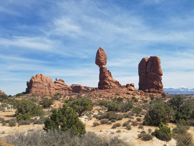
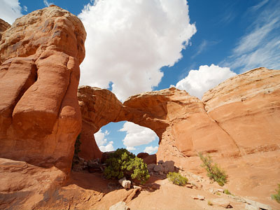
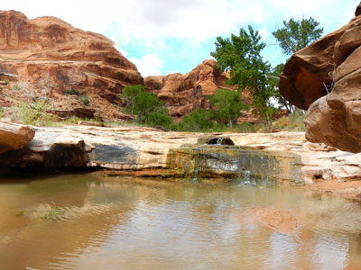
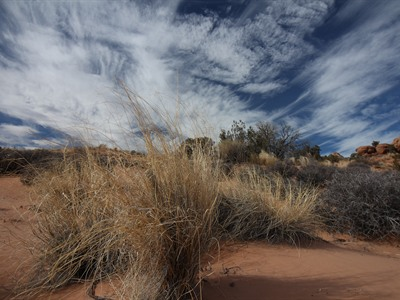
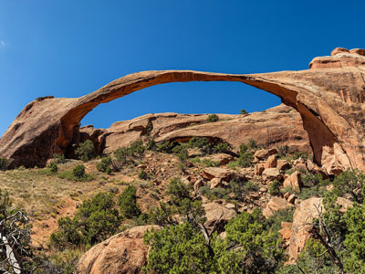
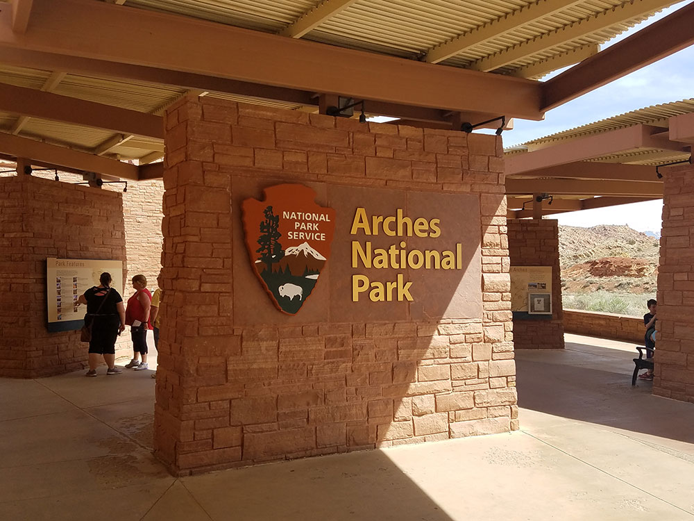
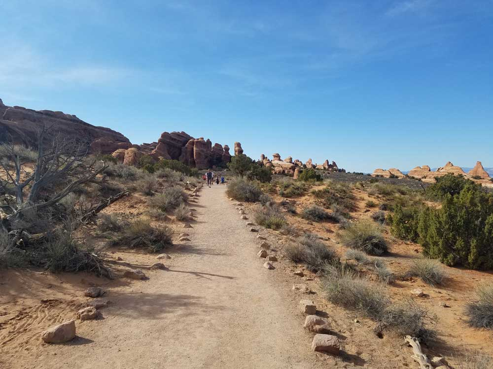
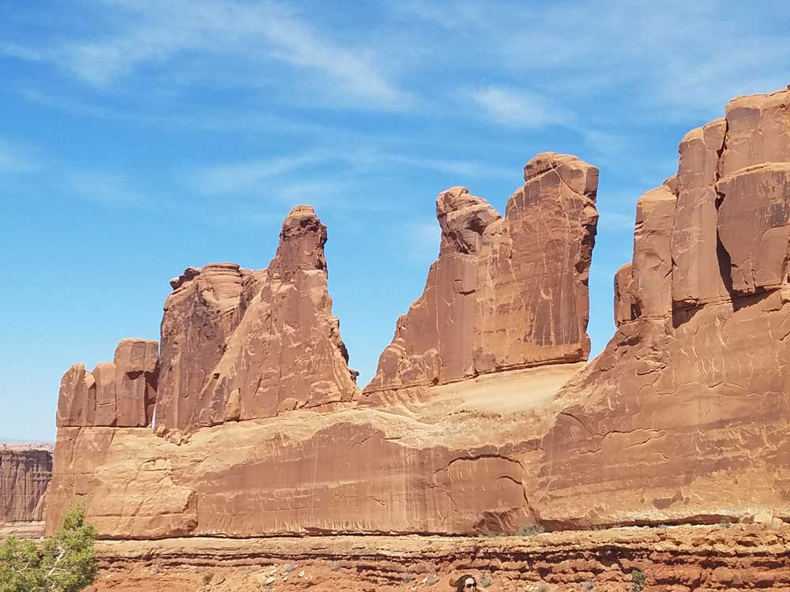
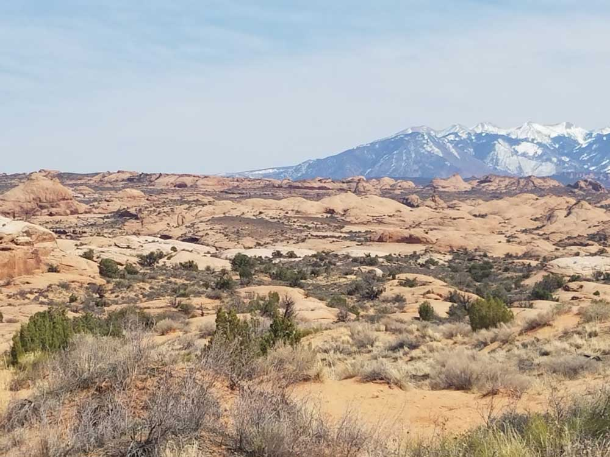

Arches National Park Travel Guide
National park known for more than 2,000 natural sandstone arches, including the well-known Delicate Arch, as well as a variety of unique geological resources and formations and contains the highest density of natural arches in the world
Arches Visitor Center open 9am to 4pm daily
Admission to Arches National Park is good for seven days
Accepts America The Beautiful Pass
How to Get There
From Moab, UT: Head west on E Center St toward N Main St. Turn right onto US-191 N/N Main St Continue to follow US-191 N. Turn right onto Arches Entrance Rd.
Overview
Arches National Park in eastern Utah, on the Colorado River just north of Moab, protects the greatest concentration of natural sandstone arches in the world, with more than 2,000 catalogued arches in about 76,000 acres. Red rock fins, balanced rocks, spires, and pinnacles fill the desert landscape, set against the snowcapped La Sal Mountains. The arches formed over millions of years as water and ice worked on the Entrada Sandstone sitting above a deep layer of ancient salt. Delicate Arch, the freestanding arch pictured on Utah license plates, is the park's best-known landmark.
The area was first protected as a national monument in 1929 and became a national park in 1971. Arches is popular because so many of its sights are close to the road, so visitors can see dramatic formations in a single day, and because the park sits beside Moab, one of the Southwest's busiest adventure towns. People come to hike to Delicate Arch at sunset, walk among the arches at Devils Garden, photograph Balanced Rock and Double Arch, and stargaze under some of the darkest skies in the country.
Park Sections
Arches has a single main entrance off US-191, about 5 miles north of Moab, and one paved park road that runs about 18 miles to its end at Devils Garden. Along the way, side roads lead to the main sections. The Windows Section, about 9 miles in, has the North and South Windows, Turret Arch, and Double Arch. The Delicate Arch area has a trailhead and two viewpoints, and Devils Garden at the end of the road holds the highest number of arches, including Landscape Arch. Fiery Furnace, a maze of narrow sandstone canyons, can be entered only with a permit or a ranger-led hike. Remote areas such as Klondike Bluffs and Tower Arch in the northwest are reached by unpaved roads.
Sightseeing and Exploring the Park
The park road is an easy scenic drive with many pull-offs. Early stops include Park Avenue, a viewpoint over a canyon of tall sandstone walls, and Courthouse Towers. Farther along are the La Sal Mountains Viewpoint, Balanced Rock, and the Windows Section. The Delicate Arch Viewpoint offers a distant view for those who do not hike to the arch, and the Fiery Furnace Viewpoint overlooks the maze below. Because the road is paved, the park can be driven in about half a day, but most visitors stop at several overlooks and short trails along the way.
Hiking
Arches has trails for most abilities. Short and easy walks include the roughly half-mile trail to Double Arch, the Windows loop (about 1 mile), and the 1.6-mile round trip on a wide, gravel path to Landscape Arch in Devils Garden. The 3-mile round-trip hike to Delicate Arch is moderate to strenuous, with a climb of about 480 feet over open slickrock and little shade. Longer trails include the Devils Garden Primitive Loop, which continues past Landscape Arch to more arches and has some exposed scrambling. The Fiery Furnace requires route-finding and is only for visitors with a permit or on a guided tour. Pets are not allowed on trails.
Other Activities
Activities in the park beyond sightseeing and hiking include stargazing, as Arches is an International Dark Sky Park, ranger-led programs and Fiery Furnace walks, rock climbing in permitted areas, and canyoneering with a permit. Most adventure activities are based in nearby Moab, where outfitters offer rafting on the Colorado River, jeep tours, mountain biking, and trips to nearby Canyonlands National Park and Dead Horse Point State Park.
Flora and Wildlife
Arches is a high desert, and its most important plants are often easy to miss. Cryptobiotic soil, a dark, bumpy crust of living organisms, holds the sandy soil together, so stay on trails and on slickrock. Common plants include Utah juniper, pinyon pine, blackbrush, sagebrush, and cottonwoods along Courthouse Wash. Wildlife is hard to spot in the daytime, but mule deer, desert bighorn sheep, coyotes, kangaroo rats, lizards, and ravens live in the park, and animals are most active at dawn and dusk. There are no organized wildlife tours.
Access
Arches is in southeastern Utah, about 5 miles north of Moab, and nearly all visitors arrive by car. Grand Junction, Colorado, is about 110 miles east, a drive of roughly 1.75 hours, and Salt Lake City is about 235 miles northwest, around 4 hours. The nearest airport is Canyonlands Field, about 18 miles north of Moab, with limited service, and larger airports are in Grand Junction and Salt Lake City. There is no public transportation to the park, although Moab has shuttles and tour companies. Timed-entry reservations may be required during peak months, so check the National Park Service website before you go.
Seasons
Spring and fall are the most comfortable and most crowded seasons, with mild days and cool nights. Summer is very hot, often above 100 °F, so hike at sunrise or in the evening and carry plenty of water. Winter is quiet and cold, and occasional snow dusts the red rock, which makes for striking photographs, though some trails can be icy. The park stays open year-round, but the timed-entry system and some programs run only in certain months, and flash floods can occur during summer thunderstorms.
Camping and Lodging
There is no lodging in the park. The only campground is Devils Garden Campground, which has about 50 sites near the end of the park road, is open year-round, and requires reservations on Recreation.gov in most seasons. Backcountry camping is allowed with a permit. Moab, only minutes from the entrance, has the widest choice, with chain hotels such as the Best Western Plus Canyonlands Inn, motels, resorts such as Sorrel River Ranch, vacation rentals, and several campgrounds and RV parks. Dead Horse Point State Park has a campground about 40 minutes away, and Green River, about 50 miles northwest, offers more motels.
Visitor Centers
The Arches Visitor Center is just inside the park entrance, with exhibits on the park's geology and history, a short film, a bookstore, drinking water, and rangers who can answer questions about trails, conditions, and permits. The Fiery Furnace permits and guided walk tickets are available through the National Park Service, and it is the best place to check on timed-entry details. In town, the Moab Information Center at Main and Center Streets provides information on the park and on Canyonlands and other nearby areas.
Highlights
- Delicate Arch: the icon, reached by a 3-mile round-trip hike
- Devils Garden and Landscape Arch: the most arches
- Balanced Rock, Double Arch, and Park Avenue: easy stops
- Fiery Furnace: a maze that requires a permit or a ranger-led hike
Good to Know
- Timed entry: a reservation is required from April through October at many times, so check the park's website
- Heat: summer temperatures often exceed 100 °F; hike at dawn or dusk and carry a gallon of water per person
This article uses material from the Wikipedia article "Arches National Park", which is released under the Creative Commons Attribution-Share-Alike License 3.0. Additional information comes from the National Park Service Arches National Park website.
Featured Regions and Trails

Balanced Rock
Largest rock of its kind in the park, weighing approximately the same as an icebreaker ship or 27 blue whales with a short loop trail leading around the base of the rock

Broken Arch
Large sandstone arch rising above desert grasslands and pinyon-juniper woodland, offering an easy hike through open scenery and unique rock formations.

Fiery Furnace
Courthouse Wash Trail
0.7 mile round trip, 141 ft
Delicate Arch Trail
3.2 miles round trip, 629 ft
A scenic desert canyon hike following a sandy wash with seasonal water, shaded cottonwood groves, and ancient rock art, offering a quieter and more natural experience in Arches National Park.

Jeff P from Berkeley, CA, USA, CC BY 2.0, via Wikimedia Commons; Image Size Adjusted
.jpg){kind=link}
Delicate Arch
0.7 mile round trip, 141 ft
Delicate Arch Trail
3.2 miles round trip, 629 ft
Freestanding natural arch is the most widely recognized landmark in Arches National Park and is depicted on Utah license plates and a postage stamp commemorating Utah's centennial anniversary of admission to the Union
Devils Garden Trail
Trail leading directly to Landscape Arch, Tunnel Arch, Pine Tree Arch, Partition, Navajo, Double O, and Private Arch, as well as the Dark Angel monolith and Fin Canyon, which are accessed via the primitive loop trail and its spurs
Double Arch Trail
Close-set pair of natural arches in Arches National and is one of the more known features of the park
Fiery Furnace
Collection of narrow sandstone canyons, fins and natural arches named for the reddish hue it exhibits in sunset light located near the center of Arches National Park
Collection of narrow sandstone canyons, fins and natural arches named for the reddish hue it exhibits in sunset light
Fiery Furnace
Herdina Park
0.7 mile round trip, 141 ft
Delicate Arch Trail
3.2 miles round trip, 629 ft
A remote and lightly visited backcountry area in Arches National Park featuring sandstone fins, hidden arches, and wide-open desert terrain, ideal for exploration away from crowds.

Klondike Bluffs
Klondike Bluffs
0.7 mile round trip, 141 ft
Delicate Arch Trail
3.2 miles round trip, 629 ft
A remote desert hike and 4x4-access route in Arches National Park leading to expansive viewpoints of sandstone fins, arches, and cliffs, offering a quieter alternative to the park’s more crowded areas.

Landscape Arch
Thomas Wolf, www.foto-tw.de, CC BY-SA 3.0, via Wikimedia Commons; Image Size Adjusted

Landscape Arch
0.7 mile round trip, 141 ft
Delicate Arch Trail
3.2 miles round trip, 629 ft
Longest of the many natural rock arches located in Arches National Park and the fifth longest natural arch in the world
Park Avenue and Courthouse Towers
Massive monoliths and towering walls and views of the nearby La Sal Mountains
Sand Dunes Arch
Secluded sandstone arch hidden between towering rock fins and surrounded by deep sand, creating a shaded and uniquely enclosed desert landscape.
Skyline Arch
Large sandstone arch set high within a towering rock wall, reached by a short desert walk and known for its dramatically enlarged opening created by a historic rockfall.
Tower Arch
A massive sandstone arch perched on a rocky fin above a maze of cliffs, towers, and desert formations, offering one of the most secluded and dramatic viewpoints in the park.
Windows Loop and Turret Arch
Area containing a large concentration of arches and is one of the most scenic locations in the park



